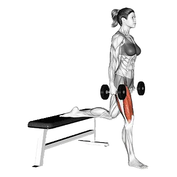

中级平均重量
一般中级训练者的参考值。
男性
65 lb
女性
39 lb
哑铃保加利亚分腿蹲平均重量 [1RM]
| 等级 | ||
|---|---|---|
| 初学者 | 22 lb | 13 lb |
| 初级者 | 40 lb | 24 lb |
| 中级者 | 65 lb | 39 lb |
| 进阶者 | 97 lb | 58 lb |
| 菁英 | 132 lb | 80 lb |
注：这些标准是以一般训练者的 1RM 为基准估算。体重、年龄等个人因素都可能造成差异。详细数据请参考下方表格。
哑铃保加利亚分腿蹲力量标准(lb)
男性按体重(lb)数据 [1RM]
| 体重 | 初学者 | 初级者 | 中级者 | 进阶者 | 菁英 |
|---|---|---|---|---|---|
| 110 | 11 | 25 | 44 | 69 | 99 |
| 120 | 13 | 28 | 48 | 75 | 105 |
| 130 | 16 | 31 | 52 | 80 | 111 |
| 140 | 18 | 34 | 56 | 84 | 116 |
| 150 | 20 | 37 | 60 | 89 | 122 |
| 160 | 22 | 40 | 64 | 93 | 127 |
| 170 | 24 | 42 | 67 | 97 | 132 |
| 180 | 26 | 45 | 70 | 102 | 136 |
| 190 | 28 | 48 | 74 | 105 | 141 |
| 200 | 30 | 50 | 77 | 109 | 145 |
| 210 | 32 | 53 | 80 | 113 | 150 |
| 220 | 34 | 55 | 83 | 116 | 154 |
| 230 | 36 | 58 | 86 | 120 | 158 |
| 240 | 38 | 60 | 89 | 123 | 161 |
| 250 | 39 | 62 | 91 | 126 | 165 |
| 260 | 41 | 64 | 94 | 130 | 169 |
| 270 | 43 | 67 | 97 | 133 | 172 |
| 280 | 45 | 69 | 99 | 136 | 176 |
| 290 | 46 | 71 | 102 | 139 | 179 |
| 300 | 48 | 73 | 104 | 142 | 182 |
| 310 | 50 | 75 | 107 | 144 | 185 |
男性按年龄数据 [1RM]
| 年龄 | 初学者 | 初级者 | 中级者 | 进阶者 | 菁英 |
|---|---|---|---|---|---|
| 15 | 19 | 34 | 56 | 82 | 113 |
| 20 | 21 | 39 | 64 | 94 | 129 |
| 25 | 22 | 40 | 65 | 97 | 132 |
| 30 | 22 | 40 | 65 | 97 | 132 |
| 35 | 22 | 40 | 65 | 97 | 132 |
| 40 | 22 | 40 | 65 | 97 | 132 |
| 45 | 21 | 38 | 62 | 92 | 125 |
| 50 | 19 | 36 | 58 | 86 | 118 |
| 55 | 18 | 33 | 54 | 80 | 109 |
| 60 | 16 | 30 | 49 | 73 | 99 |
| 65 | 15 | 27 | 44 | 66 | 90 |
| 70 | 13 | 24 | 40 | 59 | 81 |
| 75 | 12 | 22 | 36 | 53 | 72 |
| 80 | 11 | 20 | 32 | 47 | 64 |
| 85 | 10 | 18 | 29 | 42 | 58 |
| 90 | 9 | 16 | 26 | 38 | 52 |
女性按体重(lb)数据 [1RM]
| 体重 | 初学者 | 初级者 | 中级者 | 进阶者 | 菁英 |
|---|---|---|---|---|---|
| 90 | 9 | 18 | 32 | 49 | 68 |
| 100 | 10 | 20 | 33 | 51 | 71 |
| 110 | 11 | 21 | 35 | 53 | 74 |
| 120 | 12 | 22 | 37 | 55 | 76 |
| 130 | 13 | 24 | 39 | 57 | 78 |
| 140 | 14 | 25 | 40 | 59 | 81 |
| 150 | 14 | 26 | 41 | 61 | 83 |
| 160 | 15 | 27 | 43 | 62 | 85 |
| 170 | 16 | 28 | 44 | 64 | 86 |
| 180 | 17 | 29 | 45 | 65 | 88 |
| 190 | 17 | 30 | 47 | 67 | 90 |
| 200 | 18 | 31 | 48 | 68 | 91 |
| 210 | 19 | 32 | 49 | 70 | 93 |
| 220 | 19 | 33 | 50 | 71 | 94 |
| 230 | 20 | 33 | 51 | 72 | 96 |
| 240 | 21 | 34 | 52 | 73 | 97 |
| 250 | 21 | 35 | 53 | 74 | 98 |
| 260 | 22 | 36 | 54 | 75 | 100 |
女性按年龄数据 [1RM]
| 年龄 | 初学者 | 初级者 | 中级者 | 进阶者 | 菁英 |
|---|---|---|---|---|---|
| 15 | 11 | 20 | 33 | 49 | 68 |
| 20 | 12 | 23 | 38 | 57 | 78 |
| 25 | 13 | 24 | 39 | 58 | 80 |
| 30 | 13 | 24 | 39 | 58 | 80 |
| 35 | 13 | 24 | 39 | 58 | 80 |
| 40 | 13 | 24 | 39 | 58 | 80 |
| 45 | 12 | 23 | 37 | 55 | 76 |
| 50 | 11 | 21 | 35 | 52 | 71 |
| 55 | 10 | 20 | 32 | 48 | 66 |
| 60 | 10 | 18 | 29 | 44 | 60 |
| 65 | 9 | 16 | 27 | 39 | 54 |
| 70 | 8 | 14 | 24 | 35 | 49 |
| 75 | 7 | 13 | 21 | 32 | 43 |
| 80 | 6 | 12 | 19 | 28 | 39 |
| 85 | 6 | 10 | 17 | 25 | 35 |
| 90 | 5 | 9 | 15 | 23 | 31 |
注：表格中的哑铃重量按单手一只哑铃计算。
用 Shiba App 记录与分析
集中查看重量、次数与进步变化。
表格说明
| 等级 | 说明 | 分布 |
|---|---|---|
| 初学者 | 掌握正确动作，并持续训练至少 1 个月。 | 后 5% |
| 初级者 | 持续规律训练至少 6 个月。 | 前 80% |
| 中级者 | 持续规律训练至少 2 年。 | 前 50% |
| 进阶者 | 持续规律训练超过 5 年。 | 前 20% |
| 菁英 | 针对该动作专项训练超过 5 年。 | 前 5% |